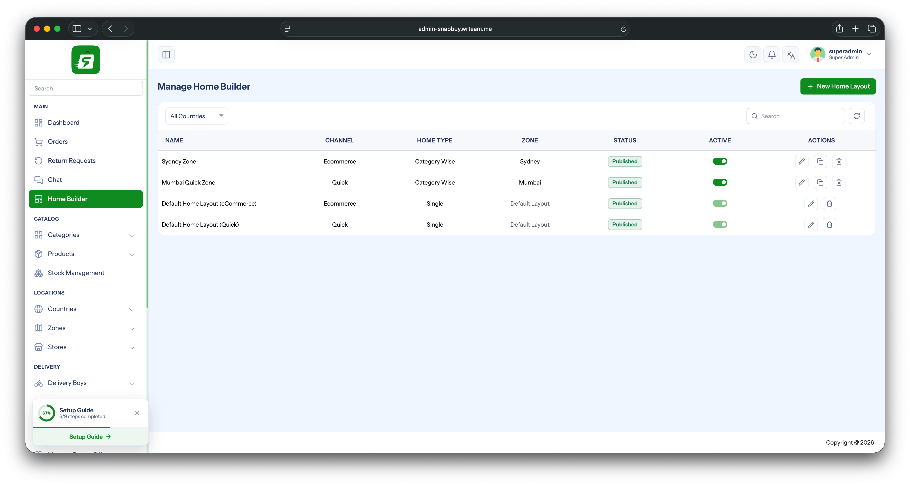
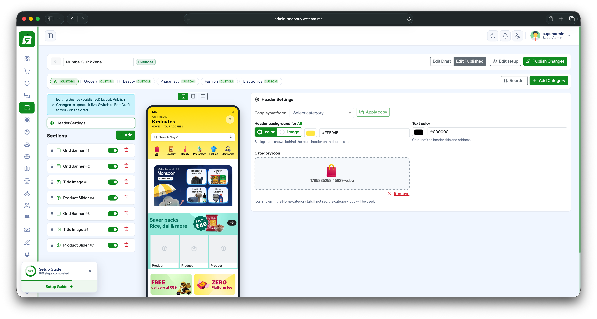
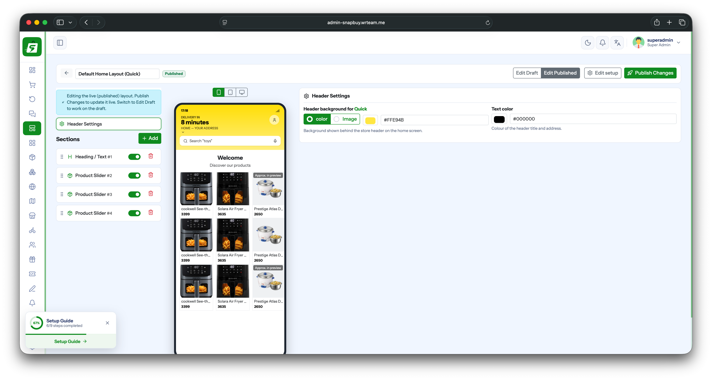
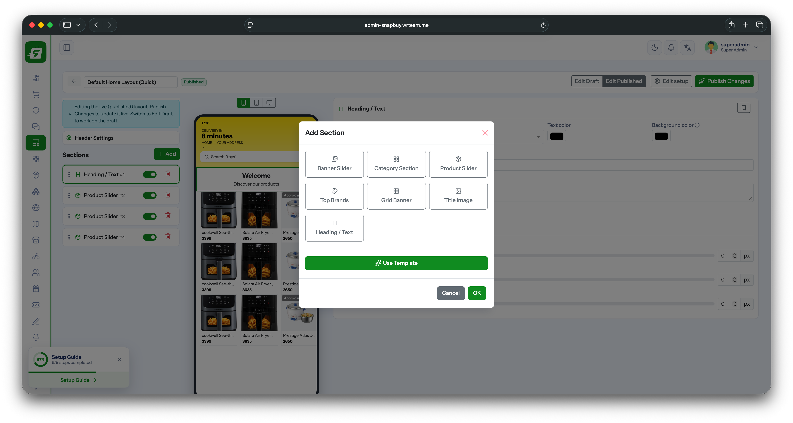

Configure Home Screen
The app's Home screen is built and controlled from the Admin Panel using Home Builder, not hardcoded in the app. Layouts are created per Zone, so different zones can show a different Home screen.
Admin panel path: Sidebar → Home Builder
1. Manage Home Builder
The Home Builder list shows every layout created so far.
| Column | Meaning |
|---|---|
| Name | Layout name (e.g. zone name or Default Home Layout) |
| Channel | Ecommerce or Quick (quick-commerce) |
| Home Type | Category Wise or Single |
| Zone | The zone this layout applies to (or Default Layout) |
| Status | Published / Draft |
| Active | Toggle to enable/disable the layout |
Two Default Home Layout entries always exist (one for Ecommerce, one for Quick) — these are used when a zone has no dedicated layout of its own. Click + New Home Layout to create a zone-specific layout, or use the row actions (edit / duplicate / delete) to manage existing ones.

2. Home Type — Category Wise vs Single
When creating/editing a layout, pick a Home Type:
- Category Wise — the Home screen shows a row of category tabs (e.g. All, Grocery, Beauty, Pharmacy, Fashion, Electronics). Each category tab has its own Header Settings and its own section list, so the Home screen content can differ per category.
- Single — one layout only, no category tabs. Used for simpler storefronts (e.g. the
Quickdefault layout).
3. Header Settings
Controls the header shown at the top of the Home screen (behind the delivery-time / address / search bar).
- Header background — solid Color or Image.
- Text color — color of the header title and address text.
- Category icon (Category Wise only) — icon shown on the Home category tab. If not set, the category's own logo is used.
- Copy layout from (Category Wise only) — copy an existing category's header settings into the one you're editing, instead of setting it up from scratch.


4. Sections
Below Header Settings, the Sections list controls what appears on the Home screen body, top to bottom.
- Drag the handle to reorder sections, or use the Reorder button.
- Toggle a section on/off without deleting it.
- Delete (trash icon) to remove a section.
- Click + Add to add a new section — choose a type from the Add Section dialog:
| Section Type | Shows |
|---|---|
| Banner Slider | Horizontal promotional banner carousel |
| Category Section | Grid/list of categories |
| Product Slider | Horizontal scrollable product list |
| Top Brands | Brand logos row |
| Grid Banner | Grid of promotional banner tiles |
| Title Image | Single banner image with a title |
| Heading / Text | Plain heading/subheading text block |
You can also click Use Template to add a pre-built set of sections instead of adding them one by one.

For Category Wise layouts, this section list is repeated per category tab (e.g. All, Grocery, Beauty, …) — use Add Category to add a new category tab to the layout.
5. Draft vs Published
Each layout has a Draft and a Published version:
- Edit Draft — work on changes without affecting the live app.
- Edit Published — edit the live layout directly.
- Publish Changes — pushes the current draft live.
- Edit setup — change the layout's name/channel/zone/home type.
The app always renders the Published version.